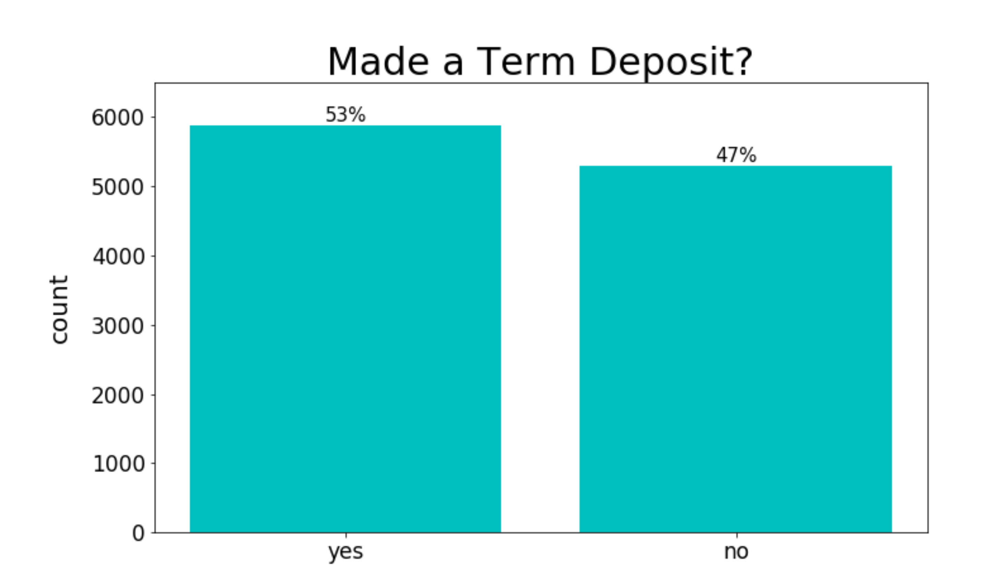
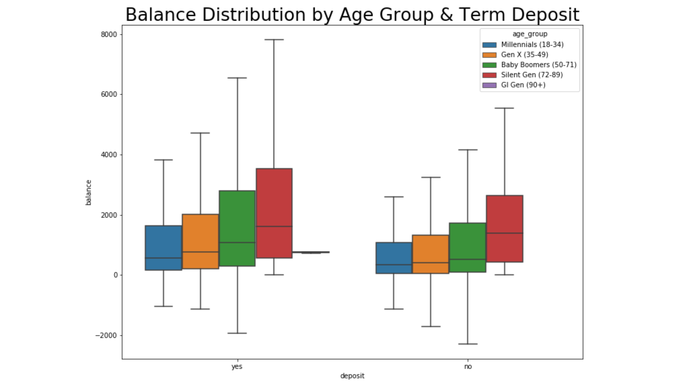
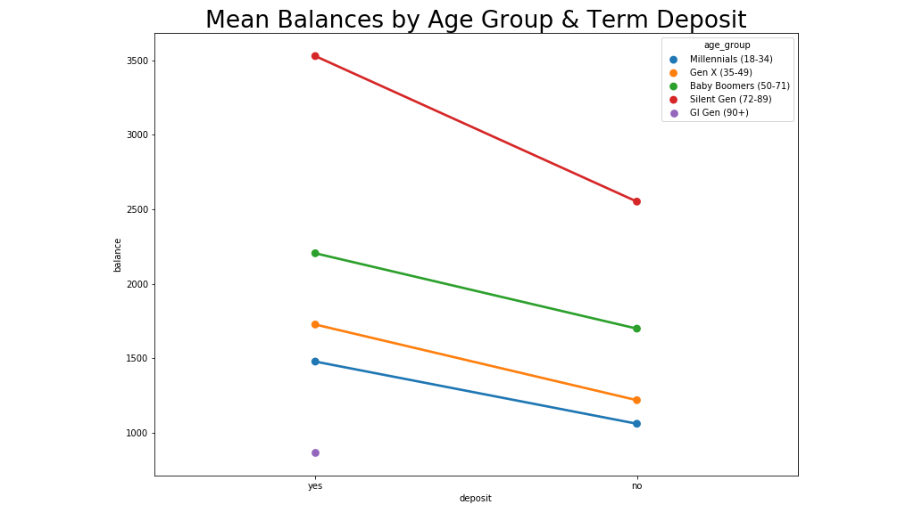
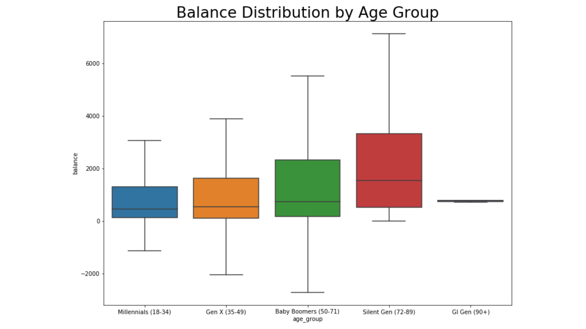
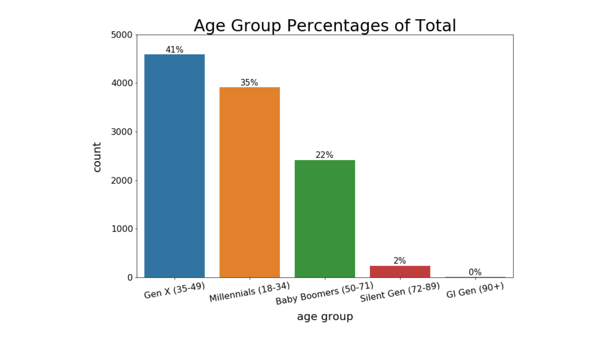
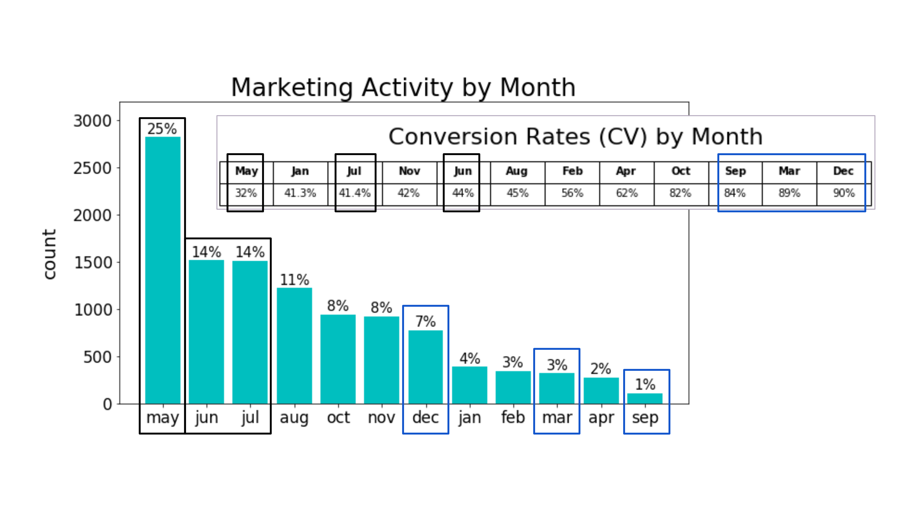
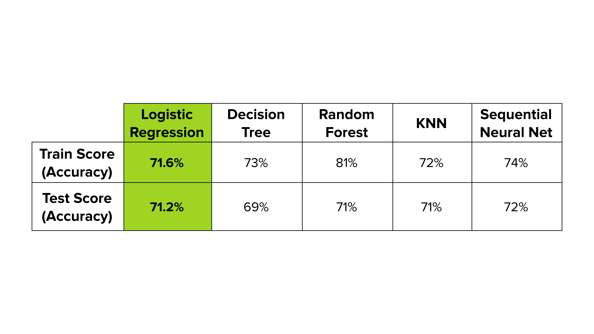

Portfolio
Term Deposit Predictions with Classsification Algorithms
Goal
Build a binary classification model to predict if a customer will make a term deposit.The Data
The data comes from marketing campaigns of a Portuguese bank. Often, more than one contact to the same customer was required, in order to know if a sign up for the product (term deposit) would be (yes) or (no). Term deposits, also known as, a certificate of deposit, (CD), is a type of savings account that has a fixed interest rate and fixed date of withdrawal, known as the maturity date. Typically there are no risks associated with these and the longer the term length, the more you will earn.{kind=link}

We can see that we have balanced classes.

Median balance distributions are higher and wider for Age Groups who signed up (“yes”).

The movement indicates that average balances get higher as customers get older, which the exception of the GI Gen (folks who are typically on limited/fixed incomes). Again, balances are higher for Age Groups who signed up (“yes”).

To really drive the point home that balances move in the same direction as age we removed the product signup slicing ("yes" vs. "no"). It will be clearer why I am focusing on this in the next visual.

As we saw with the last three visuals as balances go up and folks get older, so do their tendency to make term deposits. Yet, 76% of our customer base is made up of the least-/second-least wealthiest age groups.

There are three points to takeaway from this vusual. 1) 53% of marketing activity was in months with low CVs (black). 2) In contrast, only 11% of our marketing activity was in the months with the top-three highest CVs (blue). 3) Less than a quarter (24%) of marketing activity was in months that converted customers at rates of 56% or higher.

Here's a view of our model performance. I chose the Logistic Regression model because it is interpretable and it generalized well on our unseen data to the other models (least amount of overfitting).
Insights via Model Coefficients
Recommendations
Project Notebooks | Project Presentation
Sample text